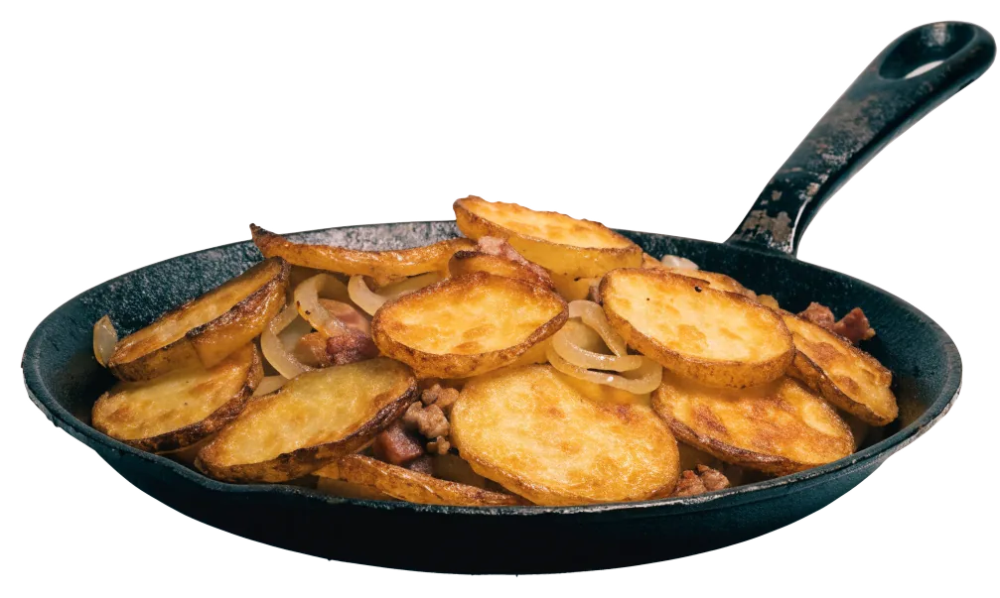
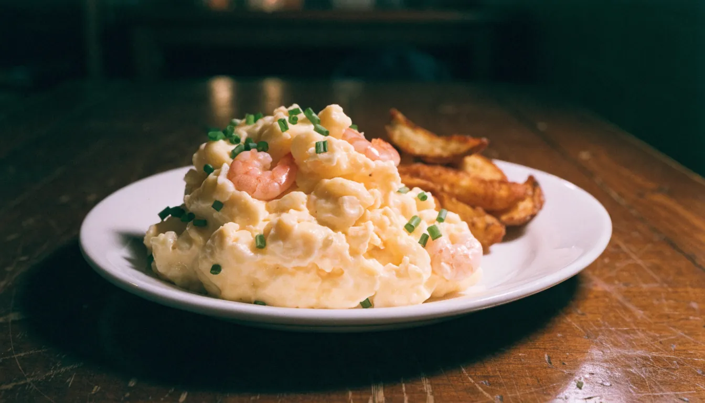
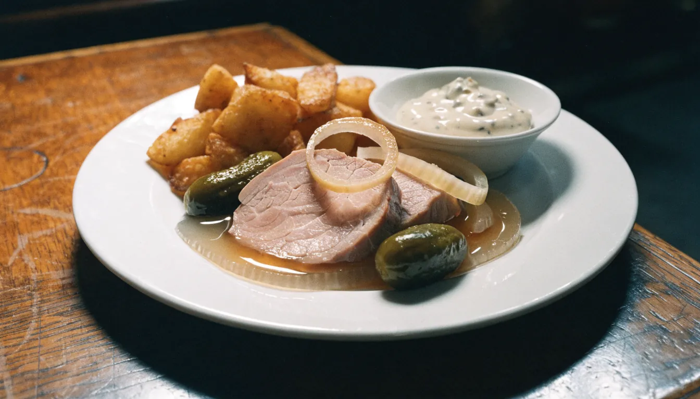
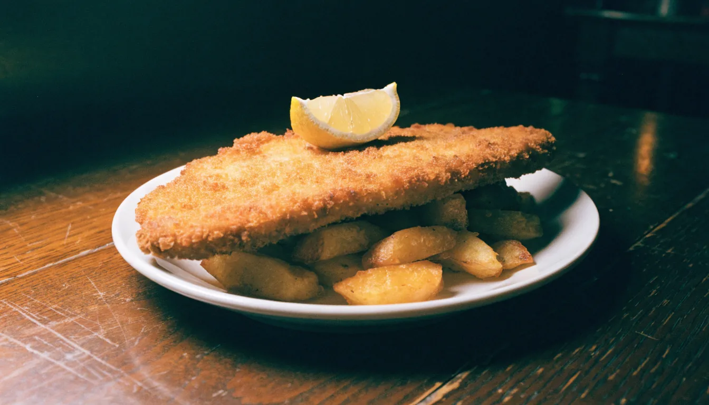

Altstädter Stube
Mittagstisch
Leckere Bratkartoffeln mit …Matjesfilet
Hausmannskost und Bier in der Altstadt. Mittagstisch den ganzen Tag, Mo–Fr 12–21 Uhr, Altstädter Str. 17.
4,7926 Bewertungen auf Google
Außergewöhnlich traditionell.
Zu Matjes, Büsumer Krabben, Rumpsteak und Sülze kommen Bratkartoffeln aus der Pfanne. Mittagstisch gibt es durchgehend von zwölf bis neun. Bei gutem Wetter sitzt man draußen unter dem Laubengang.
- Küche
- Hamburger Hausmannskost
- Mittagstisch
- Mo–Fr 12–21 Uhr
- Draußen
- Plätze unter dem Laubengang
- Vegetarisch
- Bratkartoffeln auf Anfrage
- Getränke
- Bier, Wein, Kaffee

Leckere Bratkartoffeln mit …
So steht es auf der Tafel vor der Tür. Gericht, Preis, fertig.
Fischgerichte
- 16,00 €
- 13,50 €
- Matjesfilet mit Büsumer Krabben13,00 €
- Matjesfilet „Hausfrauen Art“11,50 €
Fleischgerichte
- Rumpsteak18,00 €
- Schweinemedaillons mit Gemüse14,00 €
- 11,50 €
- Kasseler mit Bohnen12,00 €
- Putensteak14,00 €
- 12,00 €
- Bayrischer Leberkäse8,50 €
- Sülze mit Remouladen-Sauce8,50 €
Vegetarische Bratkartoffeln auf Anfrage. Die ganze Karte liegt in der Stube aus.
Guten Appetit!

Durchs Schaufenster in die Stube.
Teller von der Tafel und der Gastraum mit Holzvertäfelung und Sonnenblumen auf den Tischen.

 Foto: Yoana Aleksandrova · Google Maps
Foto: Yoana Aleksandrova · Google Maps
Mitten in der Stube. Holz, Bilder, Blumen.


Bratkartoffeln aus der Pfanne, Matjes und Krabben aus dem Norden, ein Pils dazu – mitten in der Altstadt, montags bis freitags von zwölf bis neun.
Montag bis Freitag, zwölf bis neun.
Samstag und Sonntag ist die Stube zu. Montag um zwölf geht die Pfanne wieder an.
- Mo12–21 Uhr
- Di12–21 Uhr
- Mi12–21 Uhr
- Do12–21 Uhr
- Fr12–21 Uhr
- SaRuhetaggeschlossen
- SoRuhetaggeschlossen
Altstädter Str. 17, 20095 Hamburg
Unter dem Laubengang, die Tür neben dem großen Sprossenfenster. Davor stehen die Kreidetafeln.
Route in Google Maps öffnenDie Stube ist klein. Reservieren lohnt sich.
Tag, Uhrzeit, Personen – drei Schritte an der Tafel. Für größere Runden lieber direkt anrufen.
Anrufen · 0176 97595215 4,7926 Bewertungen auf Google
 Foto: Jaime Campusano · Google Maps
Foto: Jaime Campusano · Google MapsEin Platz in der Stube?
Die Stube ist klein – kurz anrufen, dann steht der Tisch.